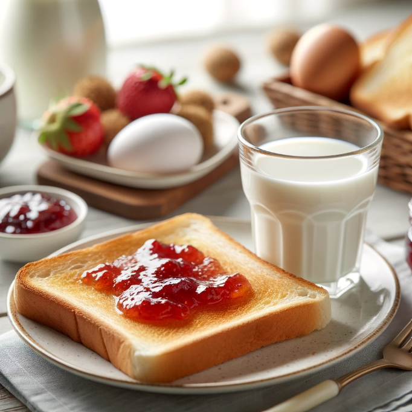

Toasted bread with fruit jam and Fresh Milk.
Ingredients
- 1 slice of whole-wheat bread (approximately 35g)
- 1 tablespoon fruit jam (approximately 20g)
- Optional: 1 tablespoon nut butter (almond butter, peanut butter, etc.)
| Nutrition Facts |
Milk (per one cup) |
Others |
| Calories |
152kcal |
190kcal |
| Protein |
8.1g |
5g |
| Fat |
8g |
2.5g |
| Carbohydrates |
12g |
35g |
Meal Procedure
- Toast the bread to your desired level of doneness.
- While the bread is toasting, prepare the toppings (if using).
- Spread the fruit jam onto the toasted bread.
- If desired, spread a layer of nut butter on top of the jam.